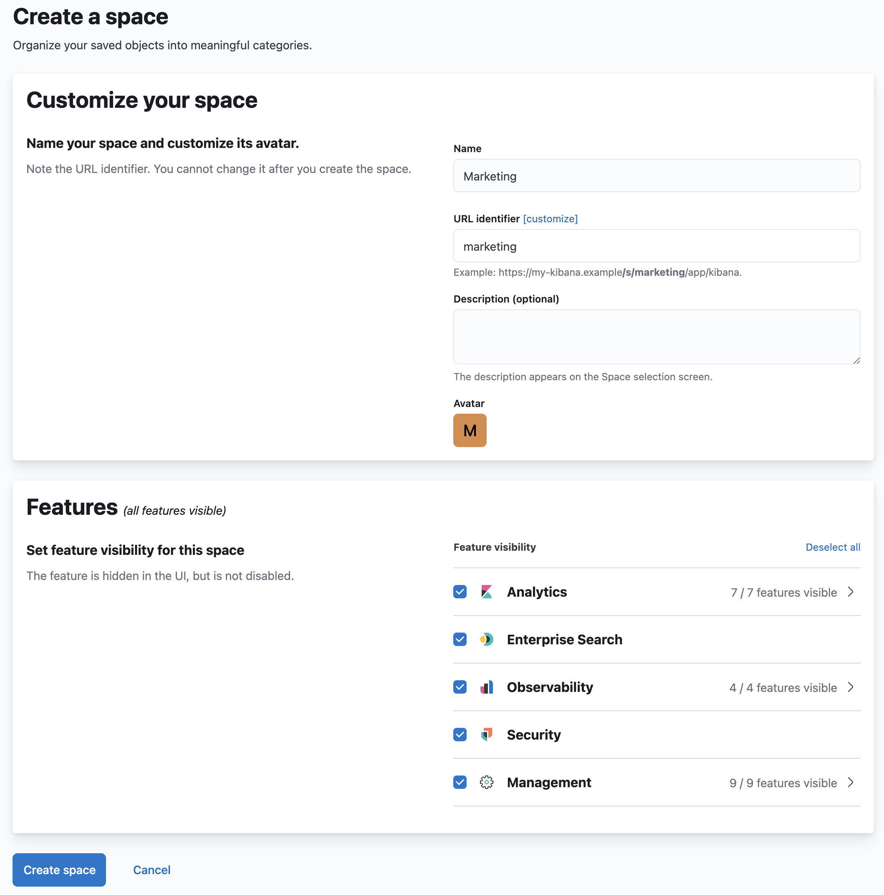
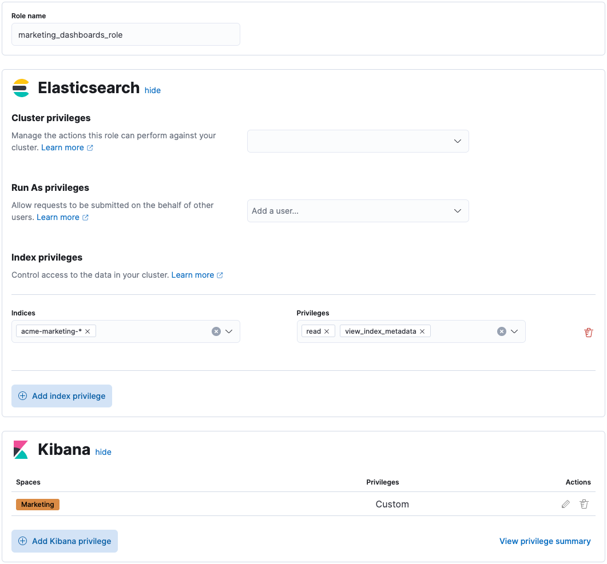
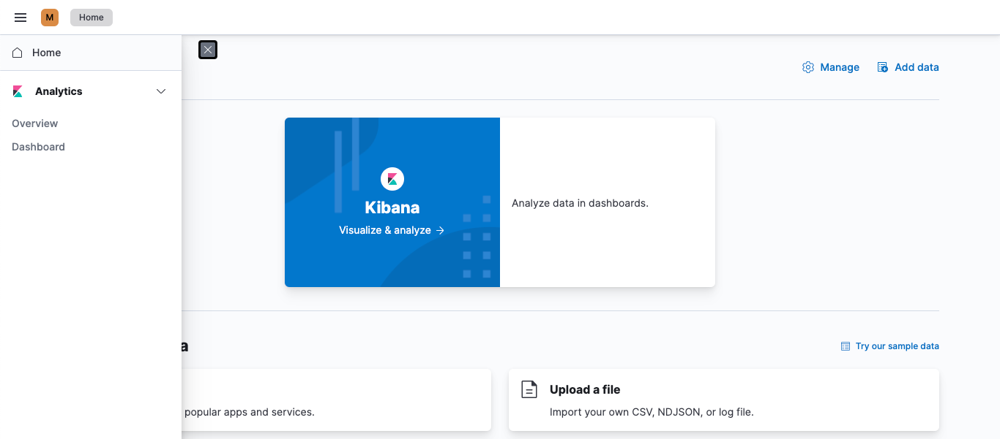

Securing access to Kibana
editKibana is home to an ever-growing suite of powerful features, which help you get the most out of your data. Your data is important, and should be protected. Kibana allows you to secure access to your data and control how users are able to interact with your data.
For example, some users might only need to view your stunning dashboards, while others might need to manage your fleet of Elastic agents and run machine learning jobs to detect anomalous behavior in your network.
This guide introduces you to three of Kibana’s security features: spaces, roles, and users. By the end of this tutorial, you will learn how to manage these entities, and how you can leverage them to secure access to both Kibana and your data.
Spaces
editDo you have multiple teams using Kibana? Do you want a “playground” to experiment with new visualizations or rules? If so, then Kibana Spaces can help.
Think of a space as another instance of Kibana. A space allows you to organize your dashboards, rules, machine learning jobs, and much more into their own categories. For example, you might have a Marketing space for your marketeers to track the results of their campaigns, and an Engineering space for your developers to monitor application performance.
The assets you create in one space are isolated from other spaces, so when you enter a space, you only see the assets that belong to that space.
Refer to the Spaces documentation for more information.
Roles
editOnce your spaces are setup, the next step to securing access is to provision your roles. Roles are a collection of privileges that allow you to perform actions in Kibana and Elasticsearch. Roles are assigned to users, and to system accounts that power the Elastic Stack.
You can create your own roles, or use any of the built-in roles. Some built-in roles are intended for Elastic Stack components and should not be assigned to end users directly.
One of the more useful built-in roles is kibana_admin. Assigning this role to your users will grant access to all of Kibana’s features. This includes the ability to manage Spaces.
The built-in roles are great for getting started with the Elastic Stack, and for system administrators who do not need more restrictive access. With so many features, it’s not possible to ship more granular roles to accommodate everyone’s needs. This is where custom roles come in.
As an administrator, you have the ability to create your own roles to describe exactly the kind of access your users should have. For example, you might create a marketing_user role, which you then assign to all users in your marketing department. This role would grant access to all of the necessary data and features for this team to be successful, without granting them access they don’t require.
Users
editOnce your roles are setup, the next step to securing access is to create your users, and assign them one or more roles. Kibana’s user management allows you to provision accounts for each of your users.
Want Single Sign-on? Kibana supports a wide range of SSO implementations, including SAML, OIDC, LDAP/AD, and Kerberos. Learn more about Kibana’s SSO features.
Example: Create a user with access only to dashboards
editLet’s work through an example together. Consider a marketing analyst who wants to monitor the effectiveness of their campaigns. They should be able to see their team’s dashboards, but not be allowed to view or manage anything else in Kibana. All of the team’s dashboards are located in the Marketing space.
Create a space
editCreate a Marketing space for your marketing analysts to use.
- Open the main menu, and select Stack Management.
- Under Kibana, select Spaces.
- Click Create a space.
-
Give this space a unique name. For example:
Marketing. -
Click Create space.
If you’ve followed the example above, you should end up with a space that looks like this:

Create a role
editTo effectively use dashboards, create a role that describes the privileges you want to grant. In this example, a marketing analyst will need:
- Access to read the data that powers the dashboards
-
Access to read the dashboards within the
Marketingspace
To create the role:
- Open the main menu, and select Stack Management.
- Under Security, select Roles.
- Click Create role.
-
Give this role a unique name. For example:
marketing_dashboards_role. -
For this example, you want to store all marketing data in the
acme-marketing-*set of indices. To grant this access, locate the Index privileges section and enter:-
acme-marketing-*in the Indices field. -
readandview_index_metadatain the Privileges field.You can add multiple patterns of indices, and grant different access levels to each. Click Add index privilege to grant additional access.
-
-
To grant access to dashboards in the
Marketingspace, locate the Kibana section, and click Add Kibana privilege:-
From the Spaces dropdown, select the
Marketingspace. - Expand the Analytics section, and select the Read privilege for Dashboard.
- Click Add Kibana privilege.
-
From the Spaces dropdown, select the
-
Click Create role.
If you’ve followed the example above, you should end up with a role that looks like this:

Create a user
editNow that you created a role, create a user account.
- Navigate to Stack Management, and under Security, select Users.
- Click Create user.
- Give this user a descriptive username, and choose a secure password.
- Assign the marketing_dashboards_role that you previously created to this new user.
- Click Create user.
Verify
editVerify that the user and role are working correctly.
- Logout of Kibana if you are already logged in.
-
In the login screen, enter the username and password for the account you created.
You’re taken into the
Marketingspace, and the main navigation shows only the Dashboard application.
What’s next?
editThis guide is an introduction to Kibana’s security features. Check out these additional resources to learn more about authenticating and authorizing your users.
- View the authentication guide to learn more about single-sign on and other login features.
- View the authorization guide to learn more about authorizing access to Kibana’s features.
Still have questions? Ask on our Kibana discuss forum and a fellow community member or Elastic engineer will help out.